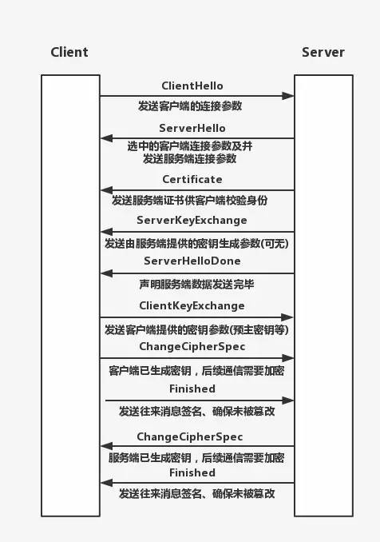

密码学入门
密码学的处理对象是数字和字符串。
散列是一种数据一旦转换为其他形式将永远无法恢复的加密技术，例如：MD5
加密：
- 对称加密（AES、DES、3DES）
- 非对称加密（RSA）
密钥交换算法
Diffie-Hellman算法是一种注明的密钥协商算法，这种算法可以使得信息交换的双方通过公开的非安全的网络协商生成安全的共享密钥
- Alice与Bob确定两个大素数n和g，这两个数不用保密
- Alice选择另一个大随机数x，并计算A如下：A=gx mod n
- Alice将A发给Bob
- Bob选择另一个大随机数y，并计算B如下：B=gy mod n
- Bob将B发给Alice
- 计算秘密密钥K1如下：K1= Bx mod n
- 计算秘密密钥K2如下：K2= Ag mod n
K1-K2，因此Alice和Bob可以用其进行加解密
证书签发机构（CA）
CA： CA（certification authority）是数字证书的签发机构，作为权威机构哦，其审核申请者身份后签发数字证书，这样我们只需要效验数字证书即可确定对方的真实身份。
CA的工作流程：
- 服务器example.com将CA请求TLS证书，例如DigiCer
- DigiCert将为example.com创建证书，证书将包含必要的数据，例如服务器名称，服务器的公钥等。
- DigiCert将创建数据（证书）的哈希值，并使用自己的私钥对其进行加密。
- 浏览器和操作系统自带DigiCert等权威机构的公钥
- 当浏览器收到签名证书时，它将使用公钥从签名生成哈希值，它还将使用证书中指定的散列算法生成数据（证书）的散列。如果两个哈希值匹配，则签名验证成功并且证书是可信的。
- 现在浏览器可以使用证书中指定的example.com的公钥继续进行身份验证过程。
- 在这里，我们可以将DigiCert称为Root CA
浏览器如何验证服务器证书的有效性
证书颁发机构是为服务器创建并签署证书，很少有组织从事这项工作，即DigiCert、Geotrust、Comodo等。如果他们正在为所有服务器签署证书，则必须为所有签名使用相同的私钥，如果它被盗，那么所有的信任都会丢失。为了解决这个问题并增加更多的平均信息量，引入了中间(CAintermediate CA)的概念。
服务器使用中级证书颁发机构的签名，因此，在于浏览器通信时，服务器将共享两个证书：
- 包含服务器的公钥，即实际的服务器证书；
- 由Root CA颁发的intermediate CA证书。
在签名验证期间，浏览器首先使用已经存储在浏览器中的Root CA 的公钥来验证中检证书的数字签名，如果成功，浏览器现在可以信任中间证书及其公钥。现在使用此公钥、浏览器将验证原始服务器证书的签名，该组织可以注册为intermediate CA，以便为其域签署证书。
SSL/TLS协议
传输层安全性协议（TLS），及其前身安全套阶层(SSl)是一种安全协议，目的是为互联网通信提供安全及数据完整性保障。
HTTPS协议的安全性由SSL协议实现，当前使用的TLS协议1.2版本包含了四个核心子协议：握手协议、密钥配置切换协议、应用数据协议及报警协议.
- TLS适用于对称密钥
- 对称密钥可以通过安全密钥交换算法共享
- 如果请求被截获，密钥交换可能会被欺骗
- 使用数字签名进行身份验证
- 证书颁发机构和信任链
HTTPS协议、SSL协议、TLS协议、握手协议的关系
- HTTPS即HTTP over SSL，可理解为基于SSL的HTTP协议。HTTPS协议安全是由SSL协议实现的。
- SSL协议是一种记录协议，扩展性良好，可以很方便的添加子协议。
- 握手协议是SSL协议的一个子协议
- TLS协议是SSL协议的后续版本
HTTPS协议分析
TLS握手的步骤

HTTPS的协议本质上就是在HTTP协议连接发起之前，先使用SSL/TLS协议，协调客户端和服务器端，在两端各自产生一个堆成加密算法的秘钥，然后以RSA（对之前生成的秘钥进行非对称加密）的方式安全地传输数据。因为对称加密算法是安全的，所以使用对称加密算法加密的网页也是安全的。
HTTPS
非对称加密算法(对称加密算法的秘钥，RSA) + 对称加密算法(加密内容，DES) + 数字证书(防止篡改非对称加密算法的公钥，CA) + HASH算法(防止篡改消息，MD5/SHA1)
HTTPS 结合使用了 非对称加密算法，对称加密算法，hash算法，分别利用他们的优势，避免他们的缺点。
利用非对称加密算法获得对称加密算法的秘钥，保证他的安全性；然后实际的网页内容的加密使用的是对称加密算法，利用了对称加密算法速度快的优势，hash算法主要是防止篡改的发生，是一种校验机制，最后数字证书，保证了服务器在将非对称加密算法的公钥传给浏览器时的安全性(不会被中间人篡改)，同时也标志了服务器的身份。
HTTP2协议分析
HTTP/2没有改动HTTP的应用语义。HTTP方法、状态代码、URI和标头字段等核心概念一如往常。
HTTP/2修改数据格式化（分帧）以及在客户端与服务器间传输的方式。这两点统帅全局，通过新的分帧层向我们应用隐藏了所有复杂性。
由于HTTP/2引入了一个新的二进制分帧层，该层无法与之前的HTTP/1.x服务器和客户端向后兼容，因此协议的主版本提升到HTTP/2。
HTTP2的特点：
使用二进制格式传输、更高效、更紧凑
对报头压缩、降低开销
多路复用、一个网络连接实现并行请求。
服务器主动推送，减少请求的延迟
默认使用加密
HTTP2 二进制分帧
HTTP/2所有性能增强的核心在于新的二进制分帧层，它定义了如何封装HTTP消息并在客户端与服务器端之间传输。
这里所谓的“层”指的是为套接字接口与应用可见的高级HTTP API之间一个经过优化的新编码机制。
HTTP/1.x协议以换行符作为纯文本的分隔符，而HTTP/2将所有传输的信息风格为更小的消息和帧，并采用二进制格式对他们编码。
客户端和服务器会替我们完成必要的分帧工作。
HTTP2 多路复用
在HTTP/1.x中，如果客户端想法器多个并行请求以提升性能，则必须使用多个TCP连接。这种模型也会导致队首阻塞，从而造成底层TCP连接的效率低下。
将HTTP消息分解为独立的帧，交错发送，然后再另一端重新组装是HTTP2最重要的一项增强，这个机制会在整个网络技术栈中引发一系列连锁反应，而从带来巨大的性能提升。
- 并行交错地发送多个请求，请求之间互不影响。
- 并行交错地发送多个响应，响应之间互不干扰
- 使用一个连接并行发送多个请求和响应。
- 不必再为绕过HTTP/1.x限制而做更多工作。
- 消除不必要的延迟和提高现有网络容量的利用率，从而减少页面加载时间。
HTTP2 服务器推送
HTTP/2新增的另一个强大的新功能，是服务器可以对一个客户端请求发送多个响应，换句话说，除了对最初请求的响应外，服务器还可以向客户端推送额外资源，而无需客户明确地请求。
HTTP/2打破了严格的请求-响应语义，支持一对多和服务器发起的推送工作流。
服务器已经知道客户端下一步要请求什么资源，这时候服务器推送即可派上用场。
推送资源可以进行以下处理：
- 由客户端缓存
- 在不同页面之间重用
- 与其他资源一起复用
- 由服务器设定优先级
- 被客户端拒绝
HTTP2的伪头字段
伪头部字段是HTTP2内置的几个特殊的以“:”开始的key，用于替换HTTP/1.x中请求行/响应行中的信息，比如请求方法，响应状态码等
:method 目标URL模式部分（请求）
:scheme 目标URL模式部分（请求）
:authority 目标URL认证部分（请求）
:path 目标URL的路径和查询部分（绝对路径产生式和一个跟着“?”字符的查询产生式）（请求）
:status 响应头中的HTTP状态码部分（响应）
了解HTTP3
运行在QUIC智商的HTTP协议被称为HTTP/3 （HTTP-over-QUIC）
QUIC协议基于UDP，正式看中了UDP的速度和效率，同事QUIC业整合了TCP、TLS和HTTP/2的有点，并加以优化。
特点：
- 减少了握手的延迟（1-RTT或0-RTT）
- 多路复用、并且没有TCP的阻塞问题
- 连接迁移、（主要是客户端）当由wifi转移到4G时，连接不会断开。
HTTP3与HTTP1.1和HTTP2没有直接关系，也不是HTTP2的扩展
HTTP3将会是一个全新的WEB协议
HTTP3目前处于制订和测试阶段
对首阻塞问题
HTTP/1.1和HTTP/2都存在对头阻塞问题
HTTP/2必须使用HTTPS，而HTTPS使用的TLS协议也存在对首阻塞问题。
QUIC解决队首阻塞问题的方法：
- QUIC的传输单元式Packet，加密单元也是Packet，整个加密、传输、解密都基于Packet，这样就能避免TLS的队首阻塞问题
- QUIC基于UDP，UDP的数据包在接收端没有处理顺序，及时中间丢失一个包，也不会阻塞整条连接，其他资源会被正常处理。
HTTP与反向代理
反向代理的用途
- 加密和SSL加速
- 负载均衡
- 缓存静态内容
- 压缩
- 减速上传
- 安全
- 外网发布